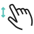

<scroll fullscreen>
    <scrolling>
        <article>
            <section>
                <h2>on <small>元素事件绑定指令及多手势事件</small></h2>
                <p>通过<code>on-</code> + <code>eventName</code>的组合方式声明一个事件绑定指令</p>
                <p>除浏览器默认支持事件外（如：click，focus等），引擎还支持以下的手势事件</p>
                <shadow>
                    <style>
                        .row {
                            position: relative;
                            width: 100%;
                            margin-left: auto;
                            margin-right: auto;
                            margin-top: 0;
                            margin-bottom: 0;
                        }
                        .row:after {
                            content: " ";
                            display: table;
                            clear: both;
                        }
                        .column {
                            position: relative;
                            padding-left: 15dp;
                            padding-right: 15dp;
                            padding-bottom: 15dp;
                            float: left;
                            width: 16.66667%;
                        }
                        .column img {
                            width: 100%;
                            max-width: 63.33dp;
                        }
                        @media screen and (max-width: [max-width]) {
                            .column {
                                width: 33.33334%;
                            }
                        }
                    </style>
                    <div class="row">
                        <div class="column">
                            <h3>Rotate</h3>
                            
                        </div>
                        <div class="column">
                            <h3>Pinch</h3>
                            
                        </div>
                        <div class="column">
                            <h3>Press</h3>
                            
                        </div>
                        <div class="column">
                            <h3>Pan</h3>
                            
                        </div>
                        <div class="column">
                            <h3>Tap</h3>
                            
                        </div>
                        <div class="column">
                            <h3>Swipe</h3>  
                            
                        </div>
                    </div>
                </shadow>
                <scroll class=exp stop-propagation="auto" x=auto y=false>
                    <scrolling style="min-width:{setting.articleWidth}dp">
                        <table>
                            <thead>
                                <tr>
                                    <th>手势</th>
                                    <th>事件</th>
                                </tr>
                            </thead>
                            <tbody>
                                <tr>
                                    <td>tap</td>
                                    <td>无</td>
                                </tr>
                                <tr>
                                    <td>pan</td>
                                    <td>panstart panmove panend pancancel panleft panright panup pandown</td>
                                </tr>
                                <tr>
                                    <td>pinch</td>
                                    <td>pinchstart pinchmove pinchend pinchcancel pinchcancel pinchout</td>
                                </tr>
                                <tr>
                                    <td>pinch</td>
                                    <td>pressup</td>
                                </tr>
                                <tr>
                                    <td>rotate</td>
                                    <td>rotatestart rotatemove rotateend rotatecancel</td>
                                </tr>
                                <tr>
                                    <td>swipe</td>
                                    <td>swipeleft swiperight swipeup swipedown</td>
                                </tr>
                            </tbody>
                        </table>
                    </scrolling>
                </scroll>
                <p>在元素上绑定一个 click 事件我们会使用如下标准写法：</p>
                <code-highlight type=html>
                    <!-- 传统写法：在全局中查找和执行 add 函数 -->
                    <div onclick="add()"></div>
                </code-highlight>
                <p>而在 IOING 中我们应该使用下面的写法：</p>
                <code-highlight type=html>
                    <!-- 新的写法：在模块和组件的特定作用域中查找和执行 add 函数 -->
                    <div on-click="add()"></div>
                </code-highlight>
                <p>使用新的书写语法声明的事件才能够被正确的执行在当前作用域中的函数（或指定命名空间脚本中的函数）<a transform=docs-dom-script param=>#了解 script 命名空间</a></p>
                <blockquote>手势类型事件包含了后面所属类型事件，即 swipe 事件包含了 swipeleft swiperight swipeup swipedown</blockquote>
            </section>

            <section>
                <h2>保持沙盒特性</h2>
                <p>比如下面是一段组件中的代码，无论外部是否有其它的 add 函数，都不会对执行组件内部的 add 函数造成影响</p>
                <code-highlight type=html>
                    <div on-tap="add()"></div>
                    <script>
                        function add () {
                            // to do something...
                        }
                    </script>
                </code-highlight>
                <p>这段代码当你在点按操作时会执行<code>add</code>函数</p>

                <h3>执行指定命名空间的脚本</h3>
                <p>如果你的模块中只有一个<code>script</code>脚本标签时，你可以不必为执行函数指定命名空间，否则你需要为执行函数指定一个明确的命名空间</p>
                <code-highlight type=html>
                    <div on-tap="event::add()"></div>
                    <script name=event>
                        function add () {
                            // to do something...
                        }
                    </script>
                </code-highlight>
                <p>这段代码当你在点按操作时会执行<code>name=event</code>中的<code>add</code>函数</p>
            </section>

            <section>
                <h2>默认传参</h2>
                <p>函数执行时可传递以下参数</p>
                <scroll class=exp stop-propagation="auto" x=auto y=false>
                    <scrolling style="min-width:{setting.articleWidth}dp">
                        <table>
                            <thead>
                                <tr>
                                    <th>关键字</th>
                                    <th>描述</th>
                                </tr>
                            </thead>
                            <tbody>
                                <tr>
                                    <td>this</td>
                                    <td>元素 Element</td>
                                </tr>
                                <tr>
                                    <td>event</td>
                                    <td>事件 Data</td>
                                </tr>
                            </tbody>
                        </table>
                    </scrolling>
                </scroll>
                <code-highlight type=html>
                    <div on-tap="event::add(event, this)"></div>
                    <script name=event>
                        function add (event, ele) {
                            console.log(ele)  // 即当前元素
                            console.log(event) // 即 Event
                            // to do something...
                        }
                    </script>
                </code-highlight>
                <p>若未设定任何传参时，默认传递 event 参数</p>
            </section>

            <section>
                <h2>on-event</h2>
                <p>当多个事件触发同一个函数时可以使用<code>on-event</code>方法</p>
                <code-highlight type=html>
                    <div on-event="swipeleft tap click|add(event, ele)"></div>
                    <script name=event>
                        function add (event, ele) {
                            console.log(ele)  // 即当前元素
                            console.log(event) // 即 Event
                            // to do something...
                        }
                    </script>
                </code-highlight>
                <p>事件和函数通过符号<code>|</code>分隔，多个事件间则使用空格符分隔</p>
            </section>

            <include footer></include>
        </article>
    </scrolling>
</scroll>